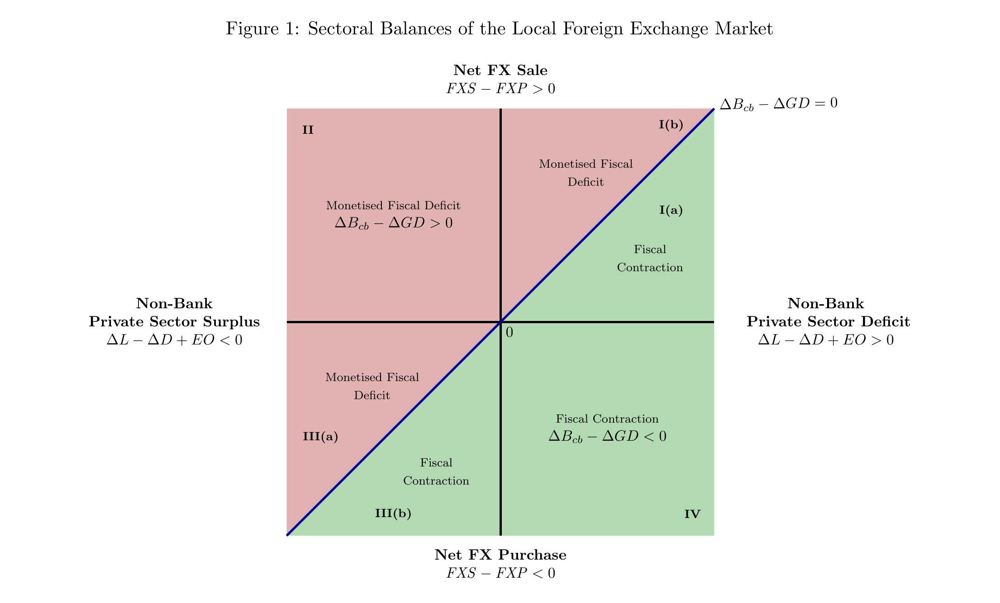

Accounting for the Paradox of Plenty: Foreign Exchange Shortages amid BoP Surpluses
Examines how foreign exchange shortages can persist even in the presence of balance-of-payments surpluses, and explores the macroeconomic mechanisms that disconnect external accounting outcomes from actual foreign exchange availability.
Latest draft: October 2025